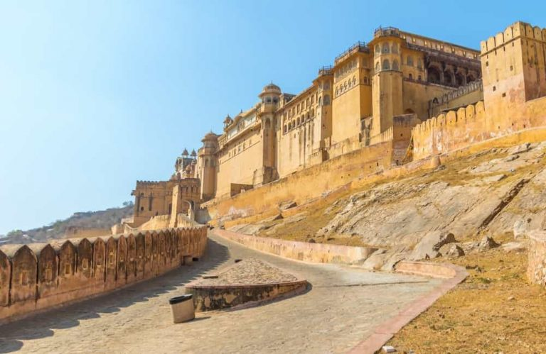
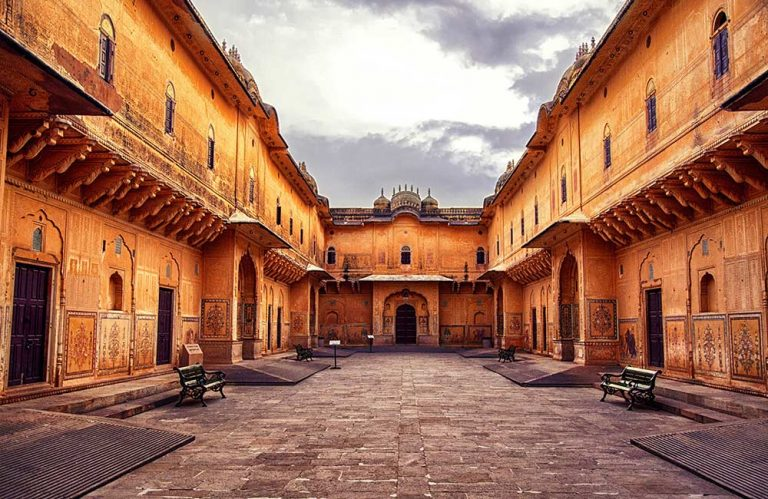
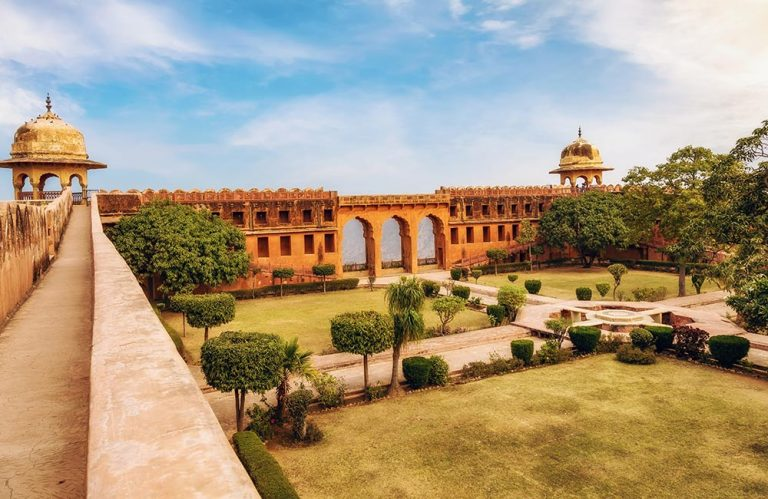
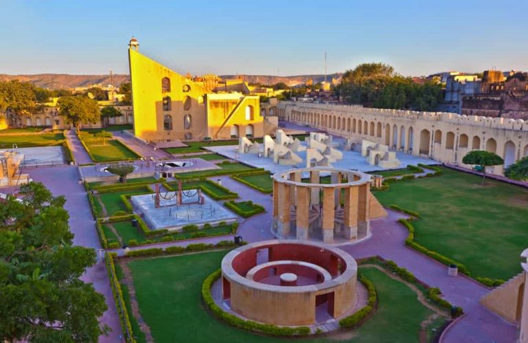

Top 10 places to be visited in Jaipur
1. Amber Fort and Palace

A majestic fort with a hilltop setting and an opulent palace within its premises that's Amber Fort and Palace for you. One of the most iconic forts in Jaipur, Amber Fort is steeped in history and remains a glorious example of architectural brilliance. The fort includes magnificent structures like the Sheesh Mahal, Shukh Niwas, and the Diwan-e-Khas or Hall of Private Audience. The light and sound show held here every evening brings alive the fort and its history, which is something you must not miss out on. Amer Palace is great example of Rajput architecture. Some of its buildings and work have influence of Mughal architecture.Constructed of red sandstone and marble, the attractive, opulent palace is laid out on four levels, each with a courtyard. It consists of the Diwan-e-Aam, or "Hall of Public Audience", the Diwan-e-Khas, or "Hall of Private Audience", the Sheesh Mahal (mirror palace), or Jai Mandir, and the Sukh Niwas where a cool climate is artificially created by winds that blow over a water cascade within the palace. Hence, the Amer Fort is also popularly known as the Amer Palace.
2. Nahargarh Fort

The rocky ridges of the Aravali Hills cradle Nahargarh Fort, a majestic monument that overlooks Jaipur and offers a stunning view of the city's landscape. Built in 1734 by Jai Singh II, the then Maharaja of Jaipur, Nahargarh Fort was part of the city's defense circle, along with Amer Fort and Jaigarh Fort. The fort served as a hunting retreat for the royal family. Today it is a splendid viewpoint to watch glorious sunsets over the Pink City. Nahargarh Fort stands on the edge of the Aravalli Hills, overlooking the city of Jaipur in the Indian state of Rajasthan. Along with Amer Fort and Jaigarh Fort, Nahargarh once formed a strong defence ring for the city. The fort was originally named Sudershangarh, but it became known as Nahargarh, which means 'abode of tigers'. The popular belief is that Nahar here stands for Nahar Singh Bhomia, whose spirit haunted the place and obstructed construction of the fort. Nahar's spirit was pacified by building a temple in his memory within the fort, which thus became known by his name.
3. Jaigarh Fort

When you are making a list of must-visit places in Jaipur, you can't leave out Jaigarh Fort. Standing at a height of 500 feet above the sea level, this 18th-century fort adorns the Cheel Ka Tila or the Hill of Eagles in the Aravali Range like a crown. Rugged beauty defines this fort that boasts of red sandstone construction. It was a prominent center of artillery production for the rulers of this land. One of the main attractions of Jaigarh fort is the Jaivana cannon, which was once the world's largest cannon on wheels. Jaigarh Fort is situated on the promontory called the Cheel ka Teela (Hill of Eagles) of the Aravalli range; it overlooks the Amer Fort and the Maota Lake, near Amer in Jaipur, Rajasthan, India. The fort was built by Sawai Jai Singh in 1726 to protect the Amer Fort and its palace complex and was named after him.
4. City Palace

Located in the heart of the city, the City Palace is one of the most remarkable tourist attractions in Jaipur. The architecture of this palace is a splendid blend of Rajput and Mughal styles. Flawless engravings and fine artworks lend this place a distinct beauty. Adorned with sprawling gardens, courtyards, halls, royal residences, and art galleries, every part of this palace reflects Rajputana glory. The palace also houses a museum where you will come across the royal garments used by Maharaja Sawai Man Singh II and Maharaja Sawai Madho Singh I. The City Palace, Jaipur was established at the same time as the city of Jaipur, by Maharaja Sawai Jai Singh II, who moved his court to Jaipur from Amber, in 1727. Jaipur is the present-day capital of the state of Rajasthan, and until 1949 the City Palace was the ceremonial and administrative seat of the Maharaja of Jaipur.The Palace was also the location of religious and cultural events, as well as a patron of arts, commerce, and industry. It now houses the Maharaja Sawai Man Singh II Museum, and continues to be the home of the Jaipur royal family.[citation needed] The palace complex has several buildings, various courtyards, galleries,
5. Jantar Mantar

Jantar Mantar is an astronomical observatory that dates back to 1734 and was built under the commands of Maharaja Sawai Jai Singh II. It houses the world's largest sundial made out of stone, in addition to nineteen other architectural astronomical instruments. This place has been declared a UNESCO World Heritage site and a visit to Jantar Mantar definitely deserves to be on your list of things to do in Jaipur. A Jantar Mantar (Hindustani pronunciation: [d͡ʒən̪t̪ər mən̪t̪ər]) is an assembly of stone-built astronomical instruments, designed to be used with the naked eye. There were five Jantar Mantars in India, all of them built at the command of the Rajah Jai Singh II, who had a keen interest in mathematics, architecture.